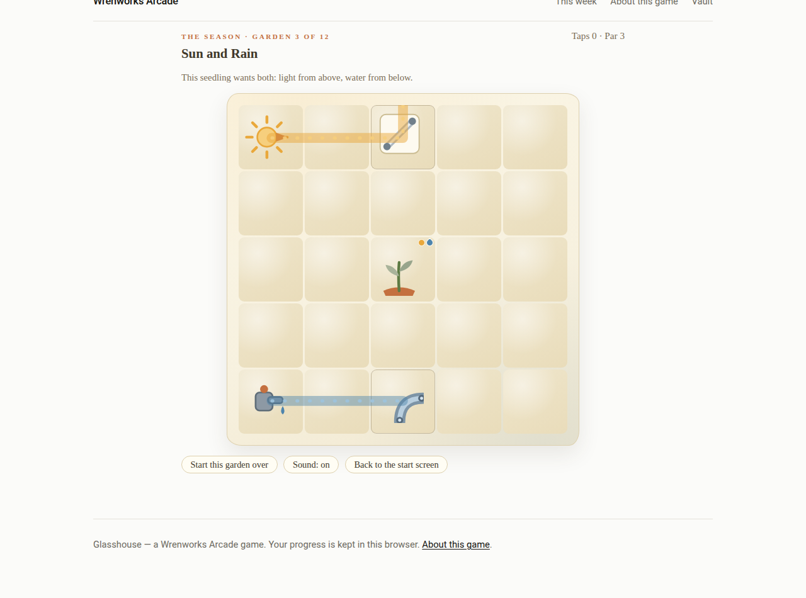
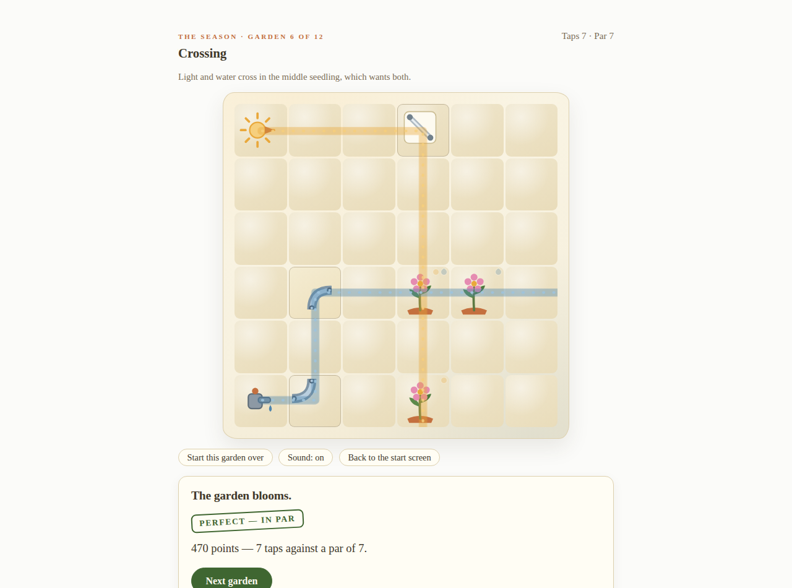
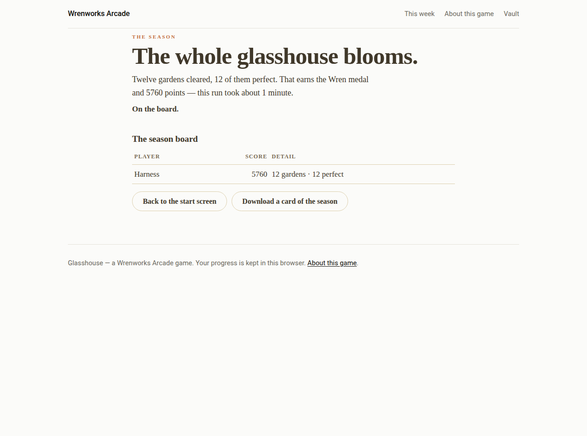

In the bank · Logic puzzle
Glasshouse
The seedlings are thirsty and the light is pointing the wrong way. Each garden in the glasshouse has a sun, a water tap, and seedlings waiting for one or the other — some want both. Your tools are mirrors, which turn the light, and sluices, which turn the water. Tap a piece to rotate it, watch the beams move, and keep going until every seedling blooms.
Nothing here is timed and nothing is hidden. The beams show you exactly where the light and water go, and a seedling's badges show what it is still waiting for. The puzzle is in the routing: pieces a beam never reaches are decoys, water stops at a mirror, light stops at a sluice, and both stop at a pot.



How it plays
- The season: 12 hand-set gardens, each one proven solvable before it was allowed in. Most players finish the season in about 35 to 50 minutes.
- Scoring: 200 points for clearing a garden, 40 for every seedling in it, and 150 more for a perfect — a clear in par taps or fewer. Par is the fewest taps the garden can be cleared in.
- Medals: bronze for finishing the season, silver for 4 perfect gardens, gold for 8, and the Wren medal for all 12 perfect.
- Endless gardens: once the season is in, seeded gardens arrive one after another, each one new, on their own board.
- Drought: a harder way to play the endless and daily gardens — the water runs dry after 8 tiles, so the wet road has to be short.
- Today's garden: one seeded garden, fresh every day, on its own board.
- Controls: tap or click a piece to turn it. Every piece is a button, so a keyboard works too, and it plays the same on a phone.
In the bank — it opens in its week
The season board
This board is your own record, kept in your own browser.
No finished seasons yet. The first line of this board is still to be earned.
The endless board
This board is your own record, kept in your own browser.
No endless sessions yet.
When this game goes into the Vault
While Glasshouse is the current game, this page is its home. When the next game arrives, this page stays — the boards above become final, the comments stay, and the play button goes. If you want it back, say so in the comments or in a reply to the Friday email — we read them all.
Comments
Comments are not open yet. Until they are, the like button above is the quickest way to say the game earned its week.